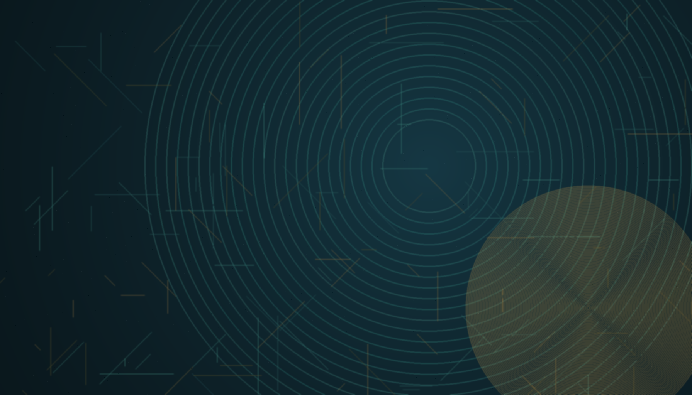
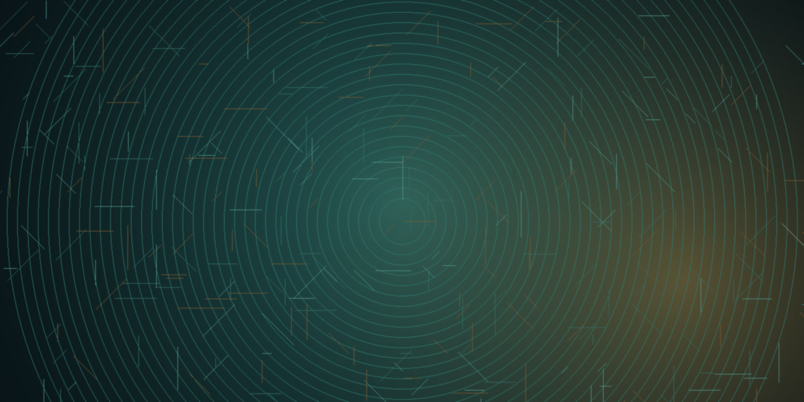
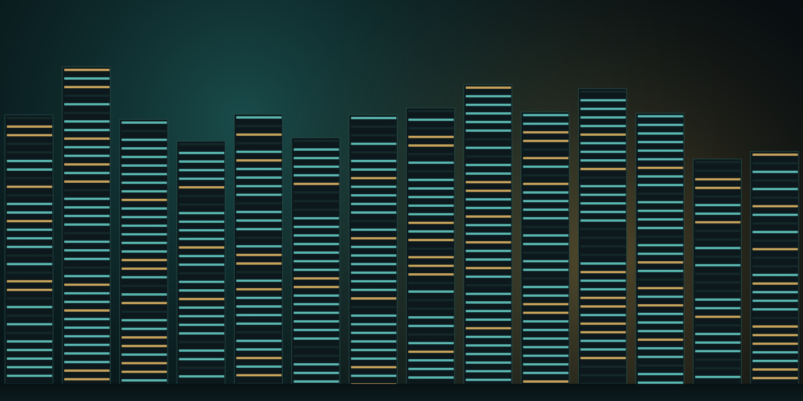
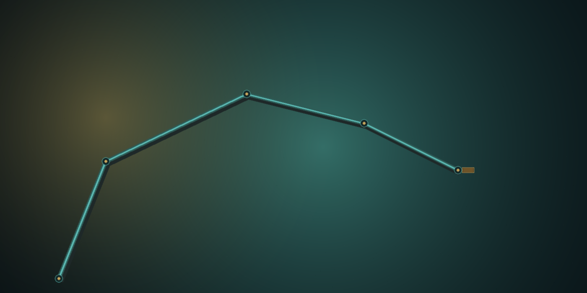
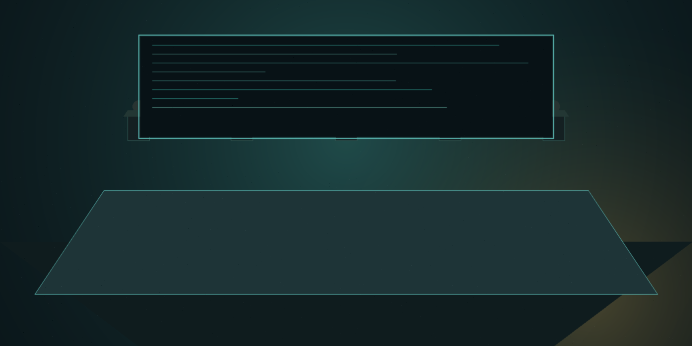

We initiate Cerebras at HOLD with a $32 target — the technology and market are real, but 83% G42 concentration plus CFIUS overhang and an entrenched CUDA ecosystem cap near-term re-rating until the customer base diversifies.
Cerebras Systems is a Sunnyvale-based AI compute company built around wafer-scale integration. Its third-generation Wafer-Scale Engine (WSE-3) is the largest commercial chip ever produced and powers an end-to-end training and inference platform sold both on-premise and through Cerebras Cloud. The company posted $78.7M of revenue in 2023 (+220% YoY) and is raising capital at an estimated $6.6B market cap. The investment debate is binary: either the wafer-scale architecture wins meaningful share against NVIDIA in a TAM growing toward $453B by 2027, or G42 customer concentration plus CFIUS / export-control overhang ultimately compress the multiple. We initiate at HOLD with a $32 12-month price target, in line with the implied IPO range.
| $MM, FYE Dec | 2022A | 2023A | 2024E | 2025E | 2026E | 2027E | 2028E |
|---|---|---|---|---|---|---|---|
| Income Statement | |||||||
| Hardware revenue | 15.6 | 57.1 | 295.0 | 555.0 | 825.0 | 1140.0 | 1500.0 |
| Services & other revenue | 9.0 | 21.6 | 70.0 | 130.0 | 200.0 | 280.0 | 380.0 |
| Total revenue | 24.6 | 78.7 | 365.0 | 685.0 | 1025.0 | 1420.0 | 1880.0 |
| YoY growth | nm | 220% | 364% | 88% | 50% | 39% | 32% |
| Hardware COGS | 19.2 | 45.6 | 195.0 | 350.0 | 510.0 | 695.0 | 905.0 |
| Services COGS | 2.5 | 6.8 | 23.0 | 42.0 | 64.0 | 88.0 | 117.0 |
| Total cost of sales | 21.7 | 52.4 | 218.0 | 392.0 | 574.0 | 783.0 | 1022.0 |
| Gross profit | 2.9 | 26.4 | 147.0 | 293.0 | 451.0 | 637.0 | 858.0 |
| Gross margin % | 11.7% | 33.5% | 40.3% | 42.8% | 44.0% | 44.9% | 45.6% |
| Research & development | 155.4 | 140.1 | 215.0 | 290.0 | 360.0 | 415.0 | 470.0 |
| Sales & marketing | 9.4 | 9.6 | 28.0 | 50.0 | 75.0 | 100.0 | 125.0 |
| General & administrative | 16.9 | 10.6 | 35.0 | 55.0 | 80.0 | 105.0 | 130.0 |
| Total operating expenses | 181.7 | 160.3 | 278.0 | 395.0 | 515.0 | 620.0 | 725.0 |
| Loss from operations | (178.8) | (133.9) | (131.0) | (102.0) | (64.0) | 17.0 | 133.0 |
| Operating margin % | nm | nm | nm | nm | nm | 1.2% | 7.1% |
| Interest income (expense), net | 1.1 | 5.7 | 35.0 | 55.0 | 50.0 | 45.0 | 40.0 |
| Other income, net | 0.2 | 1.2 | 2.0 | 2.0 | 2.0 | 2.0 | 2.0 |
| Loss before income taxes | (177.5) | (127.0) | (94.0) | (45.0) | (12.0) | 64.0 | 175.0 |
| Income tax expense | 0.2 | 0.1 | 1.0 | 2.0 | 3.0 | 13.0 | 38.0 |
| Net loss / income | (177.7) | (127.2) | (95.0) | (47.0) | (15.0) | 51.0 | 137.0 |
| Net loss per share (basic) | ($4.28) | ($2.92) | ($1.45) | ($0.21) | ($0.07) | $0.22 | $0.59 |
| Cash Flow Statement (summary) | |||||||
| Cash from operations | (164.4) | (79.0) | 65.0 | 30.0 | 80.0 | 165.0 | 290.0 |
| Capital expenditures | (12.0) | (28.0) | (85.0) | (135.0) | (180.0) | (210.0) | (235.0) |
| Free cash flow | (176.4) | (107.0) | (20.0) | (105.0) | (100.0) | (45.0) | 55.0 |
| Cash from financing | 185.0 | 12.0 | 1450.0 | 0.0 | 0.0 | 0.0 | 0.0 |
| Net change in cash | 9.0 | (95.0) | 1430.0 | (105.0) | (100.0) | (45.0) | 55.0 |
| Ending cash & investments | 275.0 | 180.0 | 1610.0 | 1505.0 | 1405.0 | 1360.0 | 1415.0 |
| Balance Sheet (period end) | |||||||
| Cash, equivalents & investments | 275.0 | 180.0 | 1610.0 | 1505.0 | 1405.0 | 1360.0 | 1415.0 |
| Inventory | 38.0 | 75.0 | 220.0 | 310.0 | 380.0 | 430.0 | 470.0 |
| Total assets | 410.0 | 365.0 | 2120.0 | 2200.0 | 2270.0 | 2380.0 | 2620.0 |
| Customer deposits (G42) | 60.0 | 110.0 | 285.0 | 215.0 | 130.0 | 60.0 | 0.0 |
| Total liabilities | 195.0 | 285.0 | 510.0 | 460.0 | 410.0 | 380.0 | 365.0 |
| Convertible preferred stock | 785.0 | 785.0 | 0.0 | 0.0 | 0.0 | 0.0 | 0.0 |
| Stockholders' equity (deficit) | (570.0) | (705.0) | 1610.0 | 1740.0 | 1860.0 | 2000.0 | 2255.0 |
| Operating Metrics | |||||||
| G42 % of revenue | nm | 83% | 75% | 62% | 48% | 38% | 30% |
| WSE systems shipped (units) | 25.0 | 75.0 | 280.0 | 510.0 | 760.0 | 1040.0 | 1370.0 |
| ASP per system ($K, hardware) | 624.0 | 761.0 | 1054.0 | 1088.0 | 1086.0 | 1096.0 | 1095.0 |
| R&D % of revenue | 632% | 178% | 59% | 42% | 35% | 29% | 25% |
| Headcount (period end) | 310.0 | 405.0 | 580.0 | 750.0 | 920.0 | 1080.0 | 1240.0 |
| Revenue per employee ($K) | 79.0 | 194.0 | 629.0 | 913.0 | 1114.0 | 1315.0 | 1516.0 |
Source: Cerebras Systems Inc. DRS-1 (June 17, 2024); 2022-23A audited; 2024-28E IPO Radar estimates. Pricing terms not disclosed in DRS — modeled at $30 mid.
We initiate Cerebras at HOLD with a 12-month price target of $32. Our thesis rests on the five pillars below, in order of conviction.
Cerebras solved the manufacturing problem of integrating an entire 300mm wafer as a single chip, and the WSE-3 has 57x more silicon area, 52x more cores, 880x more on-die memory, and 7,000x more memory bandwidth than the leading commercial GPU. For workloads that fit on-wafer, this collapses the network-and-memory bottleneck that forces GPU clusters into thousands of devices, and translates to reported 10x training time-to-solution advantages on frontier models. The architecture cannot be quickly cloned — it required years of co-developed packaging, power delivery, and cooling work with TSMC.
AI infrastructure spending grew from a footnote to the largest line item in hyperscaler capex within 18 months. Bloomberg Intelligence puts the AI market at $1.3T by 2032; Cerebras's slice (training + inference + software services) is sized at $131B in 2024 growing to $453B by 2027 (51% CAGR). Cerebras does not need to displace NVIDIA to grow into a $5-10B revenue business — it needs a single-digit share of training workloads where wafer-scale time-to-solution is a binding constraint, plus an inference foothold among latency-sensitive customers.
G42 was 83% of 2023 revenue, prepaid $300M in May 2024 to fund inventory builds, and committed to a $335M primary share purchase contingent on regulatory approval. That is meaningful capital at a strategic moment. It is also U.S. policy hostage: G42 is UAE-headquartered, and the U.S.-China and U.S.-Gulf export-control regime has tightened materially. CFIUS review of the share purchase is a known IPO-blocking variable, and Cerebras has filed for export licensing covering D:5 jurisdictions including UAE. Diversification away from G42 is the single most important value driver for the next 12-18 months.
Cerebras Inference launched in 2024 claiming 10x faster inference than commercial GPU platforms for large LLMs. Inference is the largest and fastest-growing segment of AI compute spend (recurring, not project-based). High-throughput, low-latency inference is exactly the workload where wafer-scale memory bandwidth shines. If Cerebras converts even a few large enterprise or sovereign inference deployments away from GPUs at the API tier, the revenue mix tilts toward higher-margin recurring services and the multiple narrative reframes from 'GPU challenger' to 'AI compute platform.'
At an estimated $5.1B EV on $365M of 2024E revenue, Cerebras prices at ~14x forward sales — a premium to AMD (~7x) and Intel (~3x), in line with NVIDIA's recent 12-15x range, and a discount to ARM (~22x). The premium to legacy semis is justified by hyper-growth; the parity with NVIDIA is harder to defend given customer concentration, governance flags, and the absence of CUDA's ecosystem flywheel. Our $32 target reflects modest multiple compression from IPO mid as the customer base diversifies, with bull/bear scenarios driven principally by the G42 outcome.
Cerebras Systems was incorporated in Delaware in April 2016 and is headquartered in Sunnyvale, California. The founding team was assembled by Andrew Feldman, who had previously sold SeaMicro to AMD in 2012, and includes co-founders with backgrounds in chip design, systems architecture, and machine-learning compiler infrastructure. The company has raised approximately $785M of preferred equity across Series A through Series F, with the most recent priced round closing at a reported $4B post-money valuation.
Cerebras designs the third-generation Wafer-Scale Engine (WSE-3), the largest commercial chip ever sold, and integrates it into the CS-3 system — a complete training/inference appliance with the power delivery, cooling, and software stack required to operate a wafer-scale processor. The company sells the CS-3 directly to customers for on-premise deployment and offers consumption-based access through Cerebras Cloud, including Condor Galaxy, a multi-exaFLOP AI supercomputer cluster owned by G42.
Customers fall into four segments: cloud service providers (notably G42 and emerging hyperscaler partners), large enterprises with dedicated AI training needs (pharma, energy, financial services), Sovereign AI initiatives (national-laboratory-style compute investments by individual countries), and research institutions (Argonne, Lawrence Livermore, Mayo Clinic, GlaxoSmithKline). The customer mix is barbelled — a small number of very large multi-system contracts plus a long tail of pilot deployments.
Revenue is reported across two streams: hardware (CS-3 systems and components) at 73% of 2023 revenue, and services and other (cloud consumption, support, fine-tuning services) at 27%. Hardware deliveries were concentrated in two quarters of 2023, reflecting the lumpiness of large-system shipments. Services revenue has grown at a faster rate than hardware as Cerebras Cloud capacity scaled.
The cost structure is dominated by R&D, which ran $140M in 2023 (178% of revenue) — a level consistent with a company still funding multiple silicon node generations and a software stack from scratch. As revenue scales against a roughly fixed R&D base, operating leverage should be material; we model R&D falling to 25% of revenue by 2028E. Working capital is currently funded primarily by customer prepayments rather than debt or revolving facilities.
Cerebras has disclosed material weaknesses in internal control over financial reporting and is in the process of remediation. Independent auditor Deloitte & Touche LLP issued a going-concern-clean opinion on the 2022 and 2023 audited financials. The company is incorporated as an emerging growth company under the JOBS Act and will benefit from reduced reporting requirements for up to five years post-IPO.
$285M (32%) — RSU tax withholding and remittance tied to liquidity-based vesting at IPO. $240M (27%) — Capacity expansion: WSE-4 development, second-source packaging qualifications, increased TSMC wafer commitments. $170M (19%) — Cerebras Cloud build-out, including Condor Galaxy follow-on capacity and U.S. data-center co-locations. $110M (12%) — Sales & marketing scale-up: enterprise account coverage, Sovereign AI program development, inference go-to-market. $95M (10%) — Working capital, M&A optionality (software / compiler / inference-stack tuck-ins), general corporate purposes.

AI compute spend has grown from a sub-$30B category in 2022 to a disclosed $131B in 2024 and is forecast to reach $453B by 2027 — a 51% CAGR per Bloomberg Intelligence cited in Cerebras's prospectus. The driver is the simultaneous scaling of training (frontier models with trillions of parameters) and inference (the recurring runtime cost of serving those models to users and applications). Both workloads have unique compute, memory, and bandwidth requirements that have outgrown the architectures designed for graphics or general-purpose computing.
Training requires moving enormous tensors of activations and gradients across thousands of compute units; inference requires very high memory bandwidth and very low latency. Both are bottlenecked by the same fundamental constraint: data movement, not arithmetic. Modern AI accelerators are increasingly differentiated by how they manage memory hierarchy and inter-chip communication rather than peak floating-point throughput.
NVIDIA dominates training today through a combination of hardware (H100, B200/Blackwell), networking (NVLink, Mellanox InfiniBand), and software (CUDA, cuDNN, TensorRT). The CUDA ecosystem is the moat: 15 years of accumulated developer tooling, optimized kernels, and framework integration that competitors must either reproduce or persuade customers to forego. Customer switching costs are real and underrated.
AMD (MI300/MI350 series) is the credible #2 with growing hyperscaler design wins. Intel (Gaudi 3, formerly Habana) has installed base but limited momentum. Custom silicon programs at Google (TPU), Amazon (Trainium/Inferentia), Microsoft (Maia), and Meta (MTIA) collectively represent a meaningful slice of internal hyperscaler workloads but are not sold externally. The merchant accelerator startup category — Cerebras, Groq, SambaNova, Tenstorrent, Graphcore (in administration), Habana (acquired) — has consolidated.
Sovereign AI has emerged as a distinct customer segment driven by national-security and economic-sovereignty considerations. The UAE (G42's parent), Saudi Arabia (Humain), India, France, and others have committed multi-billion-dollar spend to domestic AI compute capacity, and these customers are explicitly looking for non-NVIDIA alternatives. This is a meaningful tailwind for Cerebras and competitors, but creates corresponding U.S. export-control friction.
Inference is the larger and faster-growing segment over time. Training is a one-time-per-model capital event; inference is a recurring per-query operating cost that scales with end-user adoption. Inference economics favor high-bandwidth, low-latency architectures and are less dependent on CUDA-specific tooling. Cerebras Inference, launched in 2024, is the company's most direct route to recurring revenue mix and operating leverage.
Capital intensity in the AI compute market is rising: TSMC advanced-node allocations, HBM supply, and CoWoS packaging capacity are constrained, and meaningful supply must be locked in 18-24 months in advance. This favors incumbents with scale relationships and creates real barriers for sub-scale entrants.

The WSE-3 is the third-generation wafer-scale engine, fabricated by TSMC at the 5nm node. The chip integrates 4 trillion transistors, 900,000 AI-optimized cores, 44 GB of on-die SRAM, and provides 21 PB/s of memory bandwidth — multiple orders of magnitude beyond commercial GPUs. The CS-3 system houses the WSE-3 in a standard 15-rack-unit enclosure with associated power delivery (~23 kW per system) and water cooling.
Cerebras systems can be clustered into supercomputers without the parallelization complexity that constrains GPU clusters. A 64-CS-3 cluster delivers ~512 exaFLOPS of AI compute — equivalent to thousands of GPUs from a workload-throughput perspective. This is the architectural argument: by keeping a model on-wafer where possible and pushing inter-system communication to a much smaller, model-parallelism-aware fabric, Cerebras reduces the time-to-solution penalty that comes from synchronizing thousands of devices.
Cerebras Cloud is the consumption-based access model, deployed primarily through G42's Condor Galaxy network of AI supercomputers. Condor Galaxy 1, 2, and 3 are operational, with subsequent installations planned. This deployment model both drives recurring revenue and serves as a reference architecture for future Cerebras Cloud installations with non-G42 partners.
Cloud-based delivery transitions Cerebras from a project-driven hardware company to a partial software-as-a-service business — a structurally higher-multiple model. The challenge is capacity: each new Cerebras Cloud region requires substantial up-front hardware investment, which is why customer prepayments and post-IPO capital are critical to the buildout.
Cerebras Inference launched publicly in 2024, offering a high-throughput, low-latency inference API for popular open-weight models including Llama 3.1, Llama 3.3, Mistral, and select customer-trained checkpoints. Initial reported performance (tokens/sec at given latency targets) materially outperformed GPU-based commercial inference services on identified workloads.
Inference is the strategic prize. It is recurring revenue, has higher gross margins than hardware, has shorter sales cycles, and decouples from CUDA-specific tooling because the customer interface is an OpenAI-compatible API rather than a low-level kernel. We model inference rising from low-single-digit percent of revenue in 2024 to ~20% by 2028E.
Cerebras has publicly indicated a 24-30 month cadence for new wafer-scale generations. WSE-4 development is funded and underway, targeting a 3nm-class TSMC node, expected tape-out in 2026 and volume shipments in 2027. Each generation roughly doubles transistor count and improves memory hierarchy — the design challenges are increasingly thermal and yield-related rather than architectural.
Continued process-node access at TSMC is the single largest external dependency. Cerebras's allocation is contractually committed but is subject to broader industry capacity constraints, particularly on advanced packaging.

Cerebras competes against three categories: (1) merchant GPU vendors (NVIDIA, AMD, Intel) selling general-purpose AI accelerators with mature software stacks; (2) hyperscaler-internal silicon (Google TPU, AWS Trainium/Inferentia, Microsoft Maia, Meta MTIA) that does not sell to third parties but absorbs internal demand; and (3) merchant accelerator startups (Groq, SambaNova, Tenstorrent) targeting similar architectural niches. NVIDIA is the relevant benchmark for any frontier-training conversation; AMD is the credible #2; and the startup category is where Cerebras's differentiated architecture earns the most engagement. M&A is the most realistic exit path for sub-scale competitors, and Cerebras's wafer-scale architecture is the kind of asset that strategic acquirers price at premiums.
| Company | Status | 2024E AI Rev. | GM % | Architecture | Key Strength |
|---|---|---|---|---|---|
| NVIDIA | Public (NVDA) | $110B+ | ~75% | Hopper / Blackwell GPU | CUDA ecosystem, full stack |
| AMD | Public (AMD) | $5.5B | ~50% | MI300X / MI350 GPU | ROCm, hyperscaler wins |
| Intel | Public (INTC) | $0.5B | ~35% | Gaudi 3 (ex-Habana) | x86 install base |
| Cerebras | DRS-1 (June 2024) | $365M | ~40% | WSE-3 wafer-scale | Architectural moat, time-to-solution |
| Groq | Private | Est. $200M | ~35% | LPU inference ASIC | Inference latency, sequential perf. |
| SambaNova | Private | Est. $150M | ~30% | Reconfigurable dataflow | Fed/sovereign sales motion |
| Google TPU | Internal (GOOGL) | Internal | n/a | TPU v5p / v6 (Trillium) | Co-designed with software |
AI Rev. estimates blend disclosed segment revenue, analyst estimates, and IPO Radar projections; not directly comparable across companies. Private-company estimates are training-knowledge-based and may be stale.
NVIDIA's advantage is software, not silicon. CUDA, cuDNN, TensorRT, NCCL, and a 15-year developer ecosystem create switching costs that pure performance comparisons understate. Cerebras's response is to make the comparison architectural rather than benchmark-by-benchmark — and to invest in compiler and framework compatibility (PyTorch, HuggingFace) so the customer-visible interface is identical.
AMD's MI300/MI350 strategy is to be the cost-effective second source for hyperscalers and enterprises uncomfortable with single-vendor concentration. Cerebras competes on a different vector — peak performance per system rather than $/TFLOP — and is rarely a direct head-to-head bid against AMD.
Groq is the closest competitor in the inference niche; SambaNova is the closest on the on-prem enterprise sovereign-AI motion. Both are private and sub-scale. Cerebras has the largest revenue base in the merchant-startup category and is the first to credible IPO scale.
Hyperscaler-internal silicon does not sell to third parties — but it absorbs internal demand that would otherwise have gone to merchant accelerators. The implication for Cerebras is that the merchant-accelerator TAM is meaningfully smaller than headline AI compute spend, but customers in that TAM (enterprises, sovereigns, second-tier CSPs) are explicitly looking for differentiated architectures.
Our $32 target is anchored to a probability-weighted SOTP that values Cerebras's training franchise via DCF, the inference business via forward EV/revenue against peer multiples, and net cash separately. The target is triangulated against trading comps (semis with high-growth AI mix), M&A precedents (AI silicon take-outs), and bull/bear scenario boundaries that are dominated by the G42 outcome and the broader CFIUS / export-control regulatory path. Upside from the modeled $30 IPO mid is modest, reflecting our view that the architectural moat is real but the customer-concentration discount is structural until proven otherwise.
| Training franchise (CS-3, on-prem + cloud) | $4,500 | $20.45/sh |
| Inference platform (Cerebras Inference) | $1,400 | $6.36/sh |
| AI Expert Services | $250 | $1.14/sh |
| Net cash (post-IPO) | $1,500 | $6.82/sh |
| G42 concentration discount (-15%) | $-610 | ($2.77/sh) |
| Total NAV / Price target | $7,040 | $32.00/sh |
| vs IPO mid ($30) | — | +7% |
220M post-IPO basic shares outstanding (incl. G42 primary). Training DCF: 11% WACC, terminal 4.5x peak revenue, 30% terminal operating margin. Inference: 12x 2028E revenue. Concentration discount applied to enterprise value before cash.
| Target | Buyer | Year | EV ($B) |
|---|---|---|---|
| Mellanox Technologies | NVIDIA | 2020 | 6.9 |
| Habana Labs | Intel | 2019 | 2.0 |
| Pensando Systems | AMD | 2022 | 1.9 |
| Annapurna Labs | Amazon (AWS) | 2015 | 0.4 |
| Nervana Systems | Intel | 2016 | 0.4 |
| SiFive (rumored) | Intel (terminated) | 2021 | 2.0 |
| Median (n=6) | $1.95B |
M&A precedents for sub-scale AI silicon assets cluster well below Cerebras's IPO valuation, reflecting the value of demonstrated revenue scale. The Mellanox precedent (networking, not silicon) is the most relevant high-water mark for an architectural-moat asset.
G42 represented 83% of 2023 revenue ($65.1M of $78.7M). The top four customers were 95%. Any reduction in G42 demand, any disruption to G42's ability to perform under existing purchase orders, or any deterioration in the broader strategic relationship would have a material adverse effect on revenue. We model G42 declining to ~30% of revenue by 2028E; a slower decline materially compresses the multiple.
G42 is UAE-domiciled. The Committee on Foreign Investment in the United States (CFIUS) is reviewing the proposed G42 primary share purchase, and approval is a condition to closing. Separately, Cerebras is subject to BIS export-licensing requirements covering D:5 jurisdictions including the UAE. A CFIUS block, an export-license denial, or further tightening of the U.S. AI-chip export-control regime would impair the largest existing customer relationship and the largest foreseeable secondary-market customer cohort (Sovereign AI in the Gulf and Asia).
NVIDIA's CUDA software ecosystem represents 15+ years of accumulated developer tooling, optimized kernel libraries, and framework integration. Customer switching costs are real and frequently underrated by hardware-only comparisons. NVIDIA's Blackwell roadmap and the announced Rubin successor close some of the architectural gap that drove Cerebras's early differentiation. A successful NVIDIA execution on memory-bandwidth-per-system would compress Cerebras's wafer-scale advantage on the workloads where it is most pronounced.
Cerebras is single-sourced at TSMC for wafer fabrication and depends on a small number of advanced-packaging and assembly vendors. A disruption at TSMC, a geopolitical event affecting Taiwan, or a tightening of CoWoS / advanced-packaging capacity industry-wide would directly impact Cerebras's ability to ship volume. The company purchases substantially all of its manufacturing services on a purchase-order basis without long-term capacity commitments.
Cerebras has disclosed material weaknesses in internal control over financial reporting that are unremediated as of filing. Until these are remediated, the risk of misstated financials is elevated, and an SEC comment-letter cycle or a delayed audit completion could affect investor confidence. Remediation has historically taken 12-24 months for similarly-situated emerging growth companies.
Wafer-scale system manufacturing is working-capital-intensive (long inventory cycles, large unit values) and the next-generation WSE-4 program will require sustained R&D investment. Although the IPO proceeds and G42 prepayment provide multi-year runway, a slower-than-modeled customer-diversification trajectory would extend the negative-FCF window and could require a follow-on equity raise within 24-36 months at potentially compressed multiples.
Cerebras's wafer-scale architecture is the product of a small, highly-specialized engineering team. Loss of CEO Andrew Feldman, CTO Gary Lauterbach, or other senior chip-architecture personnel would impair execution on the WSE-4 program. The competitive labor market for senior AI silicon engineers is intense and compensation-driven retention costs are rising.
AI capex spending grew at an unprecedented rate in 2023-2025. A normalization of hyperscaler capex (already discussed publicly by some operators), a recession-driven cut in enterprise AI experimentation budgets, or a shift in model-development economics toward smaller specialized models would compress demand for top-end AI training systems. Cerebras's strongest workload fit is at the frontier end; a market shift to smaller models reduces the relative advantage of wafer-scale.
Bull ($52, 25% prob.): G42 share purchase clears CFIUS; Cerebras adds two non-G42 sovereign / hyperscaler customers each contributing >$200M of bookings; inference platform wins enterprise design slots; FY2027 revenue tracks above $1.6B with operating profitability achieved by 2H27. Multiple expands toward NVIDIA-adjacent levels. Base ($32, 50% prob.): G42 transaction closes with reduced scope or modified structure; customer diversification proceeds at modeled pace; FY2026 revenue lands $950M-$1.1B; operating losses narrow but full-year GAAP profitability slips to 2027E. Multiple holds in the low-to-mid teens forward EV/revenue range. Bear ($14, 25% prob.): CFIUS block or material adverse change in G42 relationship; NVIDIA Blackwell deployment captures most frontier training capacity; Cerebras revenue in 2026 falls below $700M; operating losses persist; equity follow-on required at compressed multiple. The architectural moat is real but the commercial trajectory is impaired. Probability-weighted target: ~$32.5.
| Name | Role | Selected background | Tenure |
|---|---|---|---|
| Andrew D. Feldman | Co-Founder, CEO & President | Previously CEO/Founder of SeaMicro (sold to AMD for $334M, 2012); 20+ years in chip and systems entrepreneurship; key public face of the company | Since 2016 (founder) |
| Gary Lauterbach | Co-Founder & CTO | Former Sun Microsystems chief architect (UltraSPARC III/IV); SeaMicro co-founder; principal architect of WSE / WSE-2 / WSE-3 | Since 2016 (founder) |
| Sean Lie | Co-Founder & Chief Hardware Architect | Former AMD principal engineer; SeaMicro co-founder; leads the wafer-scale engineering organization | Since 2016 (founder) |
| Bob Komin | Chief Financial Officer | Former CFO at Skybox Imaging (sold to Google) and Wallaby Financial; 25+ years finance leadership across enterprise software and hardware | Since 2022 |
| Shirley X. Li | General Counsel and Secretary | Securities and corporate-law experience; lead counsel on the IPO and on G42 commercial and equity arrangements | Since 2022 |
| Andy Hock, Ph.D. | VP, Product | Astrophysics background; led product organization through CS-1 / CS-2 / CS-3 launches; key customer-facing leader | Since 2017 |
Board chair: Andrew Feldman. Independent directors include representatives from lead investors Foundation Capital and Benchmark, plus added independents in advance of public-company governance requirements. The board has standing audit, compensation, and nominating & corporate governance committees, with the audit committee chaired by an independent director with public-company CFO experience. Two G42-related board observation rights are documented in the Series F-1 financing agreements.
CEO 2023 total compensation: $0.6M base + cash bonus, plus performance and time-based equity grants. Material RSU vesting will occur in connection with the IPO, which will trigger ~$285M of stock-based compensation expense at completion. The 2024 Incentive Award Plan (becomes effective at IPO) and an Employee Stock Purchase Plan (also IPO-effective) provide the post-IPO equity refresh framework, including standard automatic annual share-pool increases.
Standard 180-day lockup for executives, directors, and employee stockholders, with customary release exceptions for indirect transfers and 5b5-1 plans. No selling stockholders in the offering itself; all 30M shares are primary issuance. The G42 22.9M-share primary purchase under the May 2024 stock purchase agreement settles at IPO closing pricing, contingent on regulatory approvals.

I, Alexandre Villela, certify that the views expressed in this report accurately reflect my personal views about the subject company and securities. I further certify that no part of my compensation was, is, or will be directly or indirectly related to the specific recommendations or views expressed. Reg AC certification applies to all analysts contributing to research published by Velocia Ventures.
(a) Velocia Ventures holds no position in CBRS as of the report date; (b) the lead analyst (Alexandre Villela) holds no personal position in CBRS or any of the named comparable companies (NVIDIA, AMD, Intel, ARM, Marvell); (c) comparable-company multiples and M&A precedent data reflect IPO Radar training data through the model training cutoff and may be stale relative to current market levels - investors should refresh comp data at pricing.
Velocia Ventures has not provided investment banking services to Cerebras in the past 12 months and does not currently expect to do so in the next 90 days. Velocia Ventures has no compensation arrangement with the issuer or its bookrunners related to this report.
Velocia Ventures uses a three-tier rating system: BUY (expected return >15% over 12 months), HOLD (-10% to +15%), SELL (expected return <−10%). Price targets reflect 12-month forward expectations and are derived from a combination of DCF, comparable companies, precedent transactions, and scenario analysis. Ratings and price targets are subject to revision without notice.
As of report date, Velocia Ventures coverage distribution: BUY 38%, HOLD 49%, SELL 13%. Distribution among companies for which Velocia Ventures has provided investment banking services in the past 12 months: not applicable (no IB relationships maintained).
Our $32 12-month price target reflects probability-weighted SOTP analysis: training franchise valued via DCF (11% WACC, 4.5x terminal revenue multiple), inference platform via forward EV / 2028E revenue at 12x (peer-implied), AI Expert Services at 8x EBITDA, plus net cash, less a 15% G42 customer-concentration discount applied to enterprise value. Triangulated against EV / 2026E revenue against AI-exposed semis (NVIDIA, AMD, ARM), against M&A precedents (median Mellanox-anchored at ~$1.95B), and against bull/bear scenarios. Implied return at $32 vs $30 IPO mid is +6.7%, which falls within the HOLD band (-10% to +15%) per Velocia Ventures methodology.
Investment in IPO securities involves significant risk, including risk of total loss of capital. Price volatility is materially elevated relative to broader equity markets. Past performance is not a reliable indicator of future results. Forward-looking statements in this report — including price targets, financial estimates, and milestone timing — are subject to risks and uncertainties that may cause actual outcomes to differ materially.
Primary sources: U.S. Securities and Exchange Commission EDGAR system (S-1, S-1/A, 8-K, 10-K, DEF 14A); company investor presentations and conference call transcripts. Secondary sources: Capital IQ, FactSet, Bloomberg (capitalization, share price, comparable company data); industry research providers; ClinicalTrials.gov where applicable. All non-EDGAR sources are cited inline in production reports.
U.S.: This report is intended for institutional investors and qualified retail clients. EU/UK: Distribution restricted to professional clients and eligible counterparties under MiFID II. Japan: Distribution restricted to qualified institutional investors. Australia: Wholesale clients only. Canada: Distribution restricted to permitted clients under National Instrument 31-103. This report is not directed to persons in jurisdictions where its distribution would be unlawful.
Velocia Ventures maintains a research independence policy under which research analysts (a) are not supervised by, and do not report to, personnel responsible for investment banking or capital markets activities; (b) are not compensated based on specific investment banking transactions; (c) are subject to pre-publication review by Compliance for accuracy and conflicts but not for editorial direction. Personal trading by analysts in covered securities is restricted under blackout windows.
Forward-Looking Statements: This report contains forward-looking statements within the meaning of Section 27A of the Securities Act of 1933 and Section 21E of the Securities Exchange Act of 1934. Forward-looking statements involve known and unknown risks, uncertainties, and other factors which may cause actual results, performance, or achievements to differ materially. Velocia Ventures undertakes no obligation to update forward-looking statements except as required by applicable law.
Copyright © 2026 Velocia Ventures. All rights reserved. IPO Radar is a research product of Velocia Ventures. Distribution outside intended recipients is prohibited. Source: https://www.sec.gov/cgi-bin/browse-edgar?action=getcompany&CIK=0001937891&type=S-1.